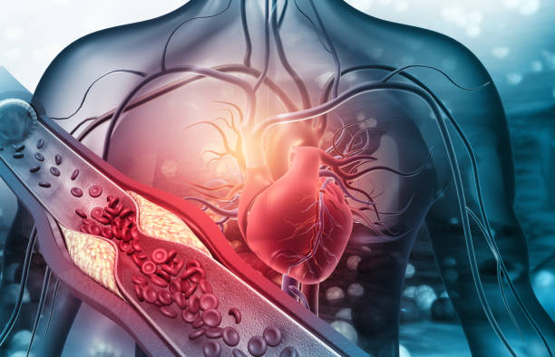

Blood Pressure
Hypertension is the medical or clinical term for “ high blood pressure." It is a very common medical problem and a leading cause of heart attack, strock, and chronic kidney disease.
Most people who have hypertension only develop symptoms when their condition progresses enough to cause damage to inner walls of their arteries. In many instances, the first sign of hypertension is a sudden heart attack or stroke. This is why it is referred to as “ the silent killer.”
When it comes to treating hypertension, the good news is that there are a vast number of prescription medications available and guidelines have been developed to help doctors quickly find an effective and well-tolerated treatment for almost anyone with this condition.
Common causes
Hypertension generally develops without a known cause and gradually worsens over the years. A number of knownn risk factors are associated with higher likelihood of developing essential hypertension and there are several health conditions that cause secondary hypertension.
1:Age
The risk of hypertension increases as you get older. In general, this is related to a number of effects of aging.
2:Gender
Hypertension is more common in men than in women until the age of 45. Thereafter and until age 64, the percentage of men and women maybe more likely to develop hypertension after age 60.
3:Race
Blacks and Whites are more likely to develop hypertension than Latinos. People of Asian descent are less likely to develop hypertension. The differences in the risk of hypertension between people of different races are believed to be caused by a combination of genetic, dietary, and lifestyle factors.
4:Kidney Disease
Chronic kidney disease affects the fluid and electrolyte volume and concentration in the body, which places excess pressure on the arteries, causing hypertension.
5:Diabetes
Diabetes increases the risk of hypertension. This is partially due to the effect of diabetes on kidney function, but people who have diabetes generally develop hypertension before there is a measurable impact on the kidneys.
Hormone conditions, thyroid disease, adrenal disease and pituitary disease produce hormonal fluctuations that lead to changes in blood pressure, with hypertension being one of the common outcomes of these conditions.
How hypertension is treated
Hypertension can be effectively treated with lifestyle modification, medication and natural remedies which includes but is not limited to the following:
1:Smoking Cessation
Smoking is one of the leading factors that causes and worsens hypertension. If you smoke and have hypertension, you may experience a substantial improvement in your blood pressure if you quit.
2: Weight Loss
If you are overweight, losing weight can help reduce your blood pressure. With some persistence , most people can do so using a combination of diet and exercise. Bariatric surgery, which may be necessary for some individuals, has also been shown to improve hypertension.
3: Dietary Modification
Foods that are high in water content, such as fresh fruits and vegetables, help maintain fluid and electrolyte balance, which can help keep blood pressure at an ideal level. Fruits and veggies also contain antioxidants which help prevent damage to your blood vessels and related vascular disease, which often prevents hypertension.
4: Exercise
Regular physical activity can help maintain optimal blood pressure, even if you do not need to exercise for weight loss. The cardiovascular, hormonal and cholesterol changes that result from exercise are all believed to contribute to maintaining a healthy blood pressure.
5: Low Salt
A diet that is low in sodium can help lower your blood pressure. Excess salt has been shown to increase blood pressure for some people, but not for everyone.
6: Prescriptions
There are many prescription medications used for the treatment of hypertension. These medications fall into categories based on their different mechanisms of action.